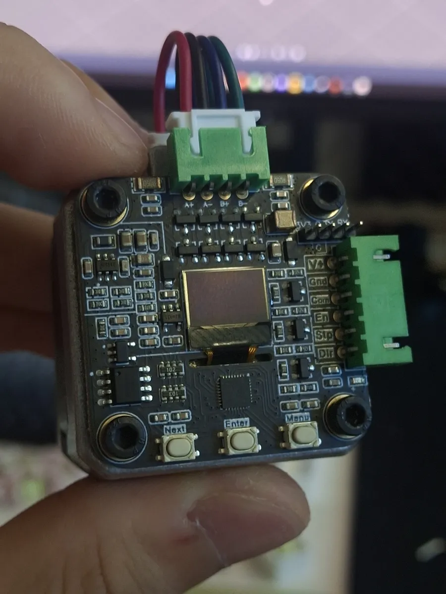
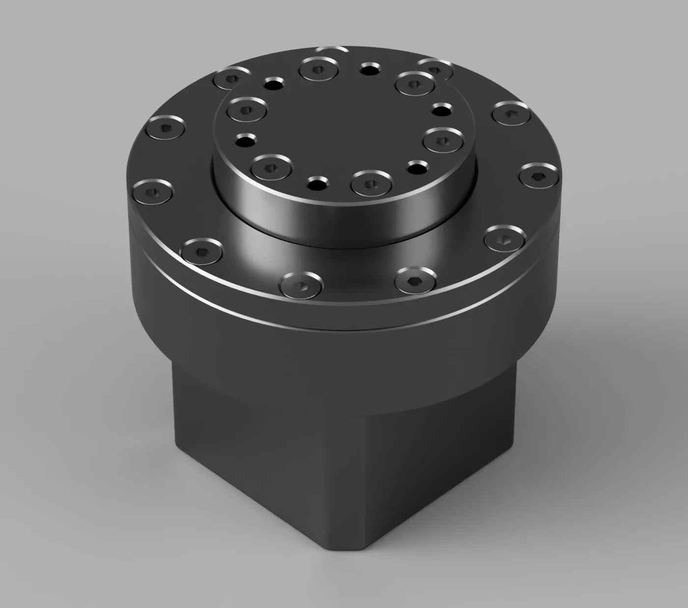
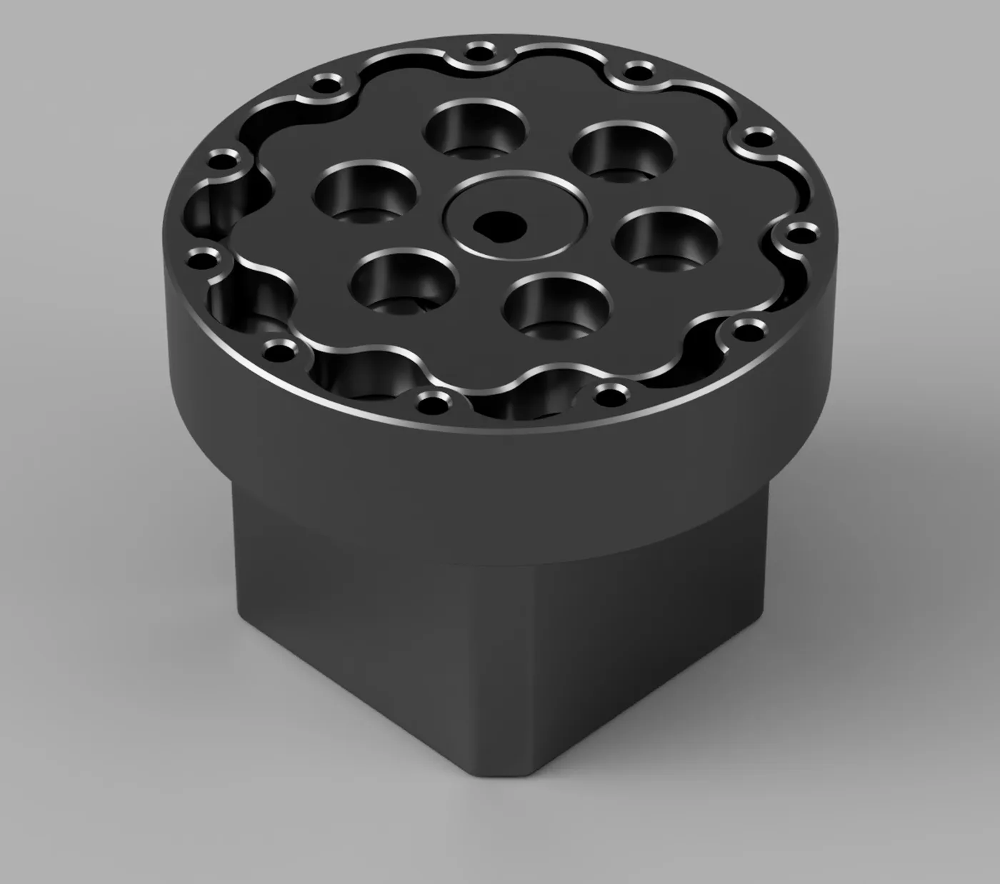

03 · 구동부
모터 위치를 읽으며
돌리는 폐루프 구동
1
NEMA17 스텝모터
감속기는 NEMA17 스텝모터 위에 바로 결합하는 구조입니다. 시제품에는 엔더3에서 떼어 낸 NEMA17 모터를 썼습니다.
2
폐루프 드라이버
모터 뒤에 붙는 MKS SERVO42C는 엔코더로 모터 위치를 읽으며 구동합니다. 스텝을 놓쳐도 위치를 바로잡을 수 있습니다.


로봇팔 관절에 쓰려고 만든, 스텝모터의 회전을 10분의 1로 줄이는 사이클로이드 감속기입니다. 3D 프린팅 시제품을 만들어 실제로 구동되는지 확인했습니다.

사이클로이드 감속기 V2 렌더
모터축에 달린 편심 캠이 돌면, 물결 모양 디스크가 바깥 핀을 따라 구릅니다. 디스크의 돌기는 10개, 바깥 핀은 하나 많은 11개입니다. 디스크는 두께 6mm짜리 2장을 겹쳐 넣었고, 바깥 핀은 따로 끼우지 않고 하우징과 한 몸으로 출력했습니다.
그래서 입력이 한 바퀴 돌 때 디스크는 돌기 하나만큼만 반대로 돕니다. 모터가 10바퀴 돌아야 출력이 한 바퀴 돌고, 그만큼 돌리는 힘(토크)은 커집니다.
디스크는 돌면서 편심만큼 흔들리기도 합니다. 디스크에 뚫린 구멍 6개(지름 약 10mm)에 출력 쪽 핀(지름 5.7mm)이 들어가 있습니다. 구멍이 핀보다 넉넉해서 흔들림은 구멍 안에서 빠지고 회전만 출력으로 전달됩니다.

덮개를 뺀 내부. 물결 모양 디스크와 출력 핀 구멍 6개, 바깥 핀 자리
설계를 FDM 3D 프린터로 출력해 조립하고, 스텝모터에 물려 돌렸습니다. 모터는 엔더3 3D 프린터에서 떼어 낸 NEMA17 모터를 썼고, 여기에 MKS SERVO42C 드라이버 보드를 붙였습니다.
FDM 시제품 구동
감속기는 NEMA17 스텝모터 위에 바로 결합하는 구조입니다. 시제품에는 엔더3에서 떼어 낸 NEMA17 모터를 썼습니다.
모터 뒤에 붙는 MKS SERVO42C는 엔코더로 모터 위치를 읽으며 구동합니다. 스텝을 놓쳐도 위치를 바로잡을 수 있습니다.

감속기 구동까지 확인하고 로봇팔용으로 시험하던 중, 제어하던 라즈베리파이 피코가 고장 나 중단했습니다. 다시 만들 때는 제어 보드가 드라이버와 통신해 명령을 주는 방식으로 바꾸고, 모터도 더 힘이 센 것을 쓸 예정입니다. 제대 후 이어갑니다.